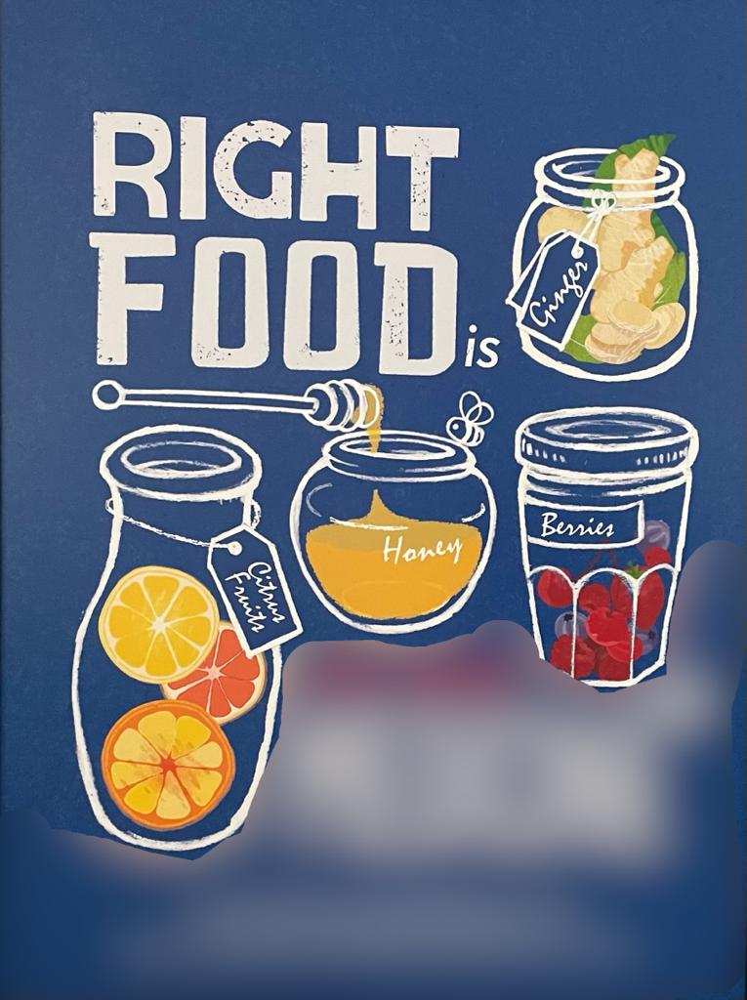
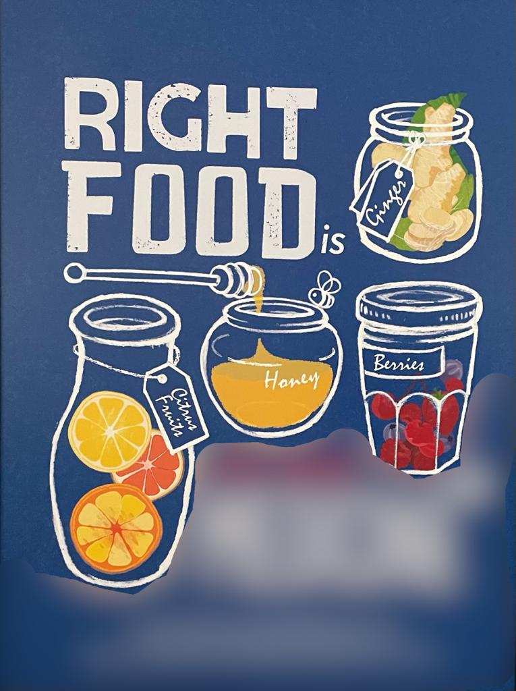
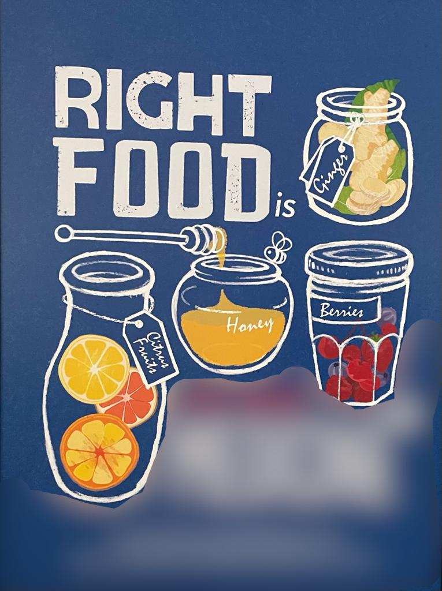

When : The Vegan cafeteria Weekdays 11:30-13:00
Where : The Vegan cafeteria is a building 101 and the S-Card at 67
What to bring : For the Vegan cafeteria you just need a bank card which works in Korea and for the S-card application you need to bring a picture in passport format. More information for the S-card can be found on OIA website.
What to do : In the Vagan cafeteria, you can totally grab some grub. Honestly, I'm not entirely sure if it's vegan or vegetarian, but they call it the vegan cafeteria. It's a bit pricier, around 7000 Won, but it's a buffet, so you can stuff yourself silly. Right behind the vegan cafeteria, you'll find the student center where you can snag the S-Card. Having the S-Card is crucial because you need it to access buildings like the library or get discounted meals at the cafeteria. Once you're an SNU student, you'll have the mobile S-Card on your phone, so you can enter buildings and whatnot without the physical card, just by using the MySNU app. But personally, I think it's more convenient to have the actual card. You can also get the S-Card along with a bank account. Check out the OIA website for more deets.

Next Magic Word : The next magic word is the noun on the blured part of the poster above WRITE THE MAGIC WORD ALL CAPS. You find the poster in the vegan cafeteria.
Next location : Is the Kwanjeong main library in building 62-1
Cafeteria Information : You can check which cafeterias exist besides the main cafeteria on this LINK. They also provide you with their opening hours etc. For the menu you can visit MENU. However the menu is in Korean, so you might want to get familiar with the korean food names haha.